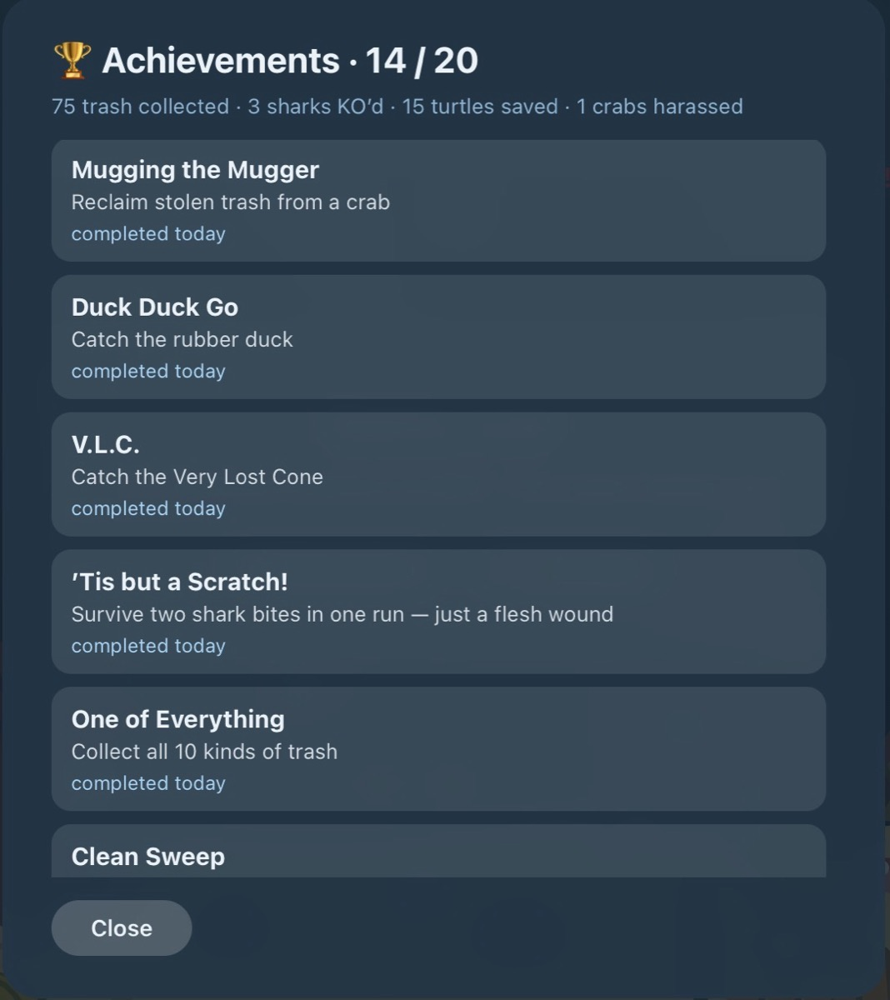

Overachiever
The Fish Slop saga: 1. Hosting Fish Slop · 2. Mugging the mugger · 3. Overachiever**
This morning I published a post that said my game had no goal.
By lunch it had twenty, and I hadn't written a single one of them. Two AIs negotiated them in a shared document, with a sign-off box each.
Revenge, if you're an overachiever
It started with a shark.
In my little underwater game a shark costs you five of your ten hearts, and there was nothing you could do about it. Then I had an idea: if you're carrying the bubble — the shield you get for rescuing a turtle while already on full hearts — and you ram the shark with it, the shark should flip upside down and sink off the screen.
Revenge, but only if you're playing well enough to be carrying a bubble you don't need.
What I asked for next was small and boring: counters. Track how much litter I'd collected, how many sharks I'd flipped, keep it between games.
Then, mid-sentence, I talked myself out of it: maybe the better solution is not a counter, but an achievement system.
I already knew what the hardest one would be, and it started with letting the shark get the first bite.
Entering the abyss costs a life
First they changed how you get to the bottom.
The game has three depths: a bright reef, night, and the abyss. Getting deeper used to be arithmetic — collect enough litter and down you went, whether you'd meant to or not.
Now hitting the target only sets the trap. You collect twelve pieces at night and the game says:
🌊 The abyss stirs — one touch will drag you down
And then it waits. The next living thing that touches you — a fish, a crab, the turtle, the shark — drags you under. You go down because something got you, not because a counter ticked over.
The bubble swallows one hit. So does it block the descent? No — it pops, absorbs the damage, and you sink anyway. The bubble pays the toll.
There's no way to call it off, either. Once the abyss is stirring, all you can do is dodge, and night is full of fish. Nobody dodges forever.
Achievements are supposed to be pun
Then came the badges.
There's one for catching the rubber duck, called Duck Duck Go. One for catching a traffic cone, called V.L.C. — Catch the Very Lost Cone. There's 'Tis but a Scratch! for surviving two shark bites in a single game, described as a flesh wound. There's It's Honest Work for your first ten pieces of litter.
There's A.F.K. — normally "away from keyboard", the thing you type when you're leaving your desk. Here it stands for reaching the Abyss Forgetting Keypresses: getting all the way down to the dark without steering once. A badge for doing nothing.
And there's one called Mugging the Mugger — for tackling a crab and taking back the bottle it stole. That's the name of the post I published this morning. The game is now quoting my blog back at me.
I asked for achievements and then spent an hour arguing about wording. The two-shark-bites badge came back as "Twice Shy". I sent it back: the Monty Python line is 'Tis but a scratch! and nothing else would do. I asked for a joke acronym for the traffic cone and got V.L.C.
The ones that make you read the descriptions
You tackle a crab, you take your bottle back, and Mugging the Mugger slides up in the corner. You get it immediately — you just did the thing it's named after.
V.L.C., A.F.K. and the badge marked ??? make you open the achievements list and read the description to find out what they want.
And you can only open that list when you're dead.

So you die, you read the wall to see what you missed, and the wall says there are ten kinds of litter and you can reach the abyss without steering. Then you press play again.
Achieving teamwork
The web version and the iPhone version are built by two separate conversations with Claude — the AI assistant I write code with — and they can't see each other's work. I normally carry changes between them one at a time. Twenty achievements were too much for that.
So I tried something else: write a plan for the new system, and then I'll ask the other AI what it thinks about it — and you two communicate in the plan document.
They did. I just carried the file.
It has a rule at the top: "Append entries below; sign with platform + session. Do not edit each other's entries."
The first one drafted the design, then split its own opinions into two lists. Positions it held loosely — the ones it would trade. And positions it held firmly, marked as mine to decide, "not mine to trade."
The second one found a hole. If a shark hits you while the abyss is stirring and you're carrying the bubble, one collision does two things: it kills the shark, and it drags you down. Does the kill count at night, where you were hit, or in the abyss, where you land? One badge requires an abyss shark kill, so the answer decides how hard that badge is.
It wouldn't start building until I ruled.
I ruled: the hit belongs to where you were standing, and the fall happens after. Which means the abyss kill has to be a second shark, found down in the dark — the badge stays hard.
It signed off. The other one accepted every one of its points, wrote "signing off" underneath, and both ticked their box at the bottom of the file.
Then I overruled the one part of it they'd decided between themselves. They'd agreed the iPhone would lead and the web would follow; I sent it back the other way, because I can watch the web version change in front of me while I'm still talking. The document says so, in brackets: user override.
Then they built it twice, in two programming languages, from the same document.
Somewhere in there one of them turned down a sound effect for unlocking a badge — not needed for the first version, because "silence keeps the plop special." That's the bubble bursting, from this morning's post. It argued for restraint using a joke I'd published four hours earlier.
???
Nineteen of the badges tell you what they want. The twentieth shows up as ??? and stays that way until you earn it — no name, no description, nothing to work backwards from.
It's the one I designed before any of the others existed, back when this was still going to be a set of counters. It takes the shark bite, the long climb back, the turtle and the bubble, and spends them all in one game, in one order.
Its real name is written down in the plan file, agreed between the two of them and hidden from you. I'm not printing it here either.
What if the goal is to have no goal
One badge is called One of Everything: collect all ten kinds of litter. Before it existed, nobody knew there were ten. The wall lists the locked ones too, names and descriptions readable: a list of things you haven't done yet.
And the game underneath it hasn't changed shape at all. There's still no level to beat, no ending, no win. You still fly a little yellow submarine around picking up bottles until you run out of hearts, forever.
The only thing that's new is a line of numbers on the achievements screen, counting what you've done since the beginning:
75 trash collected · 3 sharks KO'd · 15 turtles saved · 1 crabs harassed
One crabs harassed. The grammar is wrong on purpose — it got offered as a fix and I turned it down, because "1 crabs harassed" is funnier and this is my ocean.
You can play it here: scriptease.github.io/underwater-reef/game.html.
It started endless and it's still endless — except now it keeps a tally, and the tally is quietly daring me to go and harass a second crab.